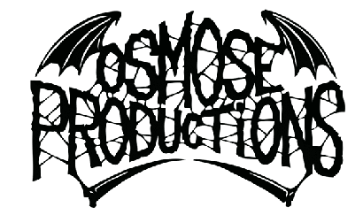

홈 > 브랜드 매거진 > Planet Core Productions
플래닛 코어 프로덕션 Planet Core Productions
플래닛 코어 프로덕션(Planet Core Productions, PCP)은 1989년 독일 프랑크푸르트에서 설립된 가바·하드코어 테크노 레이블이다. 하드코어 테크노 장르의 형성을 이끈 독일의 독립 레이블이었다.
산업 분야 미디어·엔터테인먼트 · 공개 등급 디렉토리 · 브랜드 평가 3.2 ★
한눈에 보는 브랜드
플래닛 코어 프로덕션(Planet Core Productions, PCP)은 1989년 독일 프랑크푸르트에서 설립된 가바·하드코어 테크노 레이블이다. 하드코어 테크노 장르의 형성을 이끈 독일의 독립 레이블이었다.
브랜드 관점
플래닛 코어 프로덕션은 하드코어 테크노 장르를 개척한 독일의 독립 레이블이었다. 설립·운영 주체, 주력 장르, 대표 아티스트를 함께 보면 미디어·엔터테인먼트 안에서의 위치가 또렷해진다.
시작과 성장
1989년 마르크 트라우너(마르크 아카르디파네)와 토르스텐 람바르트가 프랑크푸르트에서 설립했다. 메스칼리눔 유나이티드의 'We Have Arrived'는 최초의 하드코어 테크노로 평가되며, 레이블은 1997년 활동을 마쳤다.
브랜드 아이덴티티
Planet Core Productions의 아이덴티티는 브랜드명, 로고 사용 여부, 업종 언어, 국가적 배경을 중심으로 정리됩니다. 공개 로고 자산은 추후 권리 확인 후 보강할 수 있도록 텍스트 메타데이터 중심으로 관리합니다.
확장 지식
프랑크푸르트 기반의 가바·하드코어 테크노 레이블로 1997년 활동을 마쳤다.
제품과 서비스
가바·하드코어 테크노 음반을 발매했다. 메스칼리눔 유나이티드 등이 대표적이다.
사람들
마르크 트라우너(아카르디파네)와 토르스텐 람바르트가 1989년 설립했다.
현재 상태
자주 묻는 질문
플래닛 코어 프로덕션는 어느 나라 브랜드인가요?
플래닛 코어 프로덕션는 독일의 미디어·엔터테인먼트 브랜드입니다.
플래닛 코어 프로덕션는 언제 설립되었나요?
플래닛 코어 프로덕션는 1989년 설립되었습니다.
플래닛 코어 프로덕션의 브랜드 아이덴티티는 무엇인가요?
Planet Core Productions의 아이덴티티는 브랜드명, 로고 사용 여부, 업종 언어, 국가적 배경을 중심으로 정리됩니다.
플래닛 코어 프로덕션의 대표 제품은 무엇인가요?
가바·하드코어 테크노 음반을 발매했다.
플래닛 코어 프로덕션는 현재 어떤 상태인가요?
국가: 독일(프랑크푸르트); 상태: 1997년 활동 종료; 산업: 미디어·엔터테인먼트
함께 읽을 브랜드
 미디어·엔터테인먼트 · 디렉토리FMP/Free Music Production
미디어·엔터테인먼트 · 디렉토리FMP/Free Music ProductionFMP(Free Music Production)는 1969년 요스트 게버스(Jost Gebers)가 서베를린에서 설립한 프리재즈·즉흥음악 음반 레이블이다. 유럽 자유...
 미디어·엔터테인먼트 · 디렉토리마이너스(Minus)
미디어·엔터테인먼트 · 디렉토리마이너스(Minus)마이너스(Minus, m_nus)는 1998년 테크노 아티스트 리치 호틴이 설립한 미니멀 테크노 레이블이다. 캐나다 윈저와 독일 베를린을 기반으로 한 아티스트 운영...
사이클론 엠파이어(Cyclone Empire)는 1996년 독일에서 설립된 익스트림 메탈 레이블이다. 데스·둠·블랙 메탈 등을 다루는 독일의 독립 메탈 레이블이다.
아이 큐(Eye Q Records)는 1990년 스벤 패스와 하인츠 로트가 독일에서 설립한 트랜스 레이블이다. '사운드 오브 프랑크푸르트'에 큰 영향을 준 트랜스의...

미디어·엔터테인먼트 · 디렉토리오스모즈 프로덕션(Osmose Productions)오스모즈 프로덕션(Osmose Productions)은 1991년 에르베 에르보가 프랑스에서 설립한 블랙·데스 메탈 레이블이다. 이모털·마르두크 등을 배출한 익스트림...
Den Kongelige Samling는 2025년에 기록된 Museums, Galleries & Libraries 계열의 브랜드 아이덴티티 사례입니다. Kontra...
Eternal Research는 2025년에 기록된 Sound 계열의 브랜드 아이덴티티 사례입니다. Cotton가 아이덴티티 작업의 디자이너로 기록되어 있습니다. 공...
Expo '90는 1987년에 기록된 World Expos 계열의 브랜드 아이덴티티 사례입니다. Mitsuo Katsui가 아이덴티티 작업의 디자이너로 기록되어 있습...